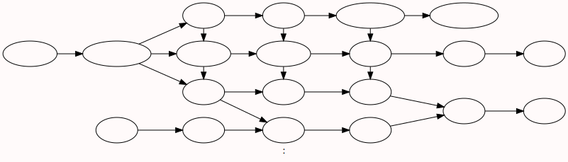
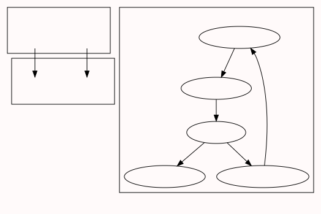
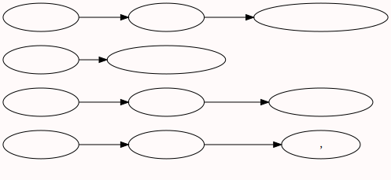

本文的目的是研究与 资本论的宏观经济研究 相对 的微观经济研究
资本论 第一卷 补
第二十四章 所谓原始积累
- 资本主义积累之前有一种 “原始” 积累
- 大多数人的贫穷和少数人的富有就是从这种原罪开始的; 前者无论怎样劳动, 除了自己本身以外仍然没有可出卖的东西{无法参与商品交易}, 而后者虽然早就不再劳动, 但他们的财富却不断增加。
- 在真正的历史上, 征服、 奴役、 劫掠、 杀戮,总之, 暴力起着巨大的作用。但是在温和的政治经济学中, 从来就是田园诗占统治地位。正义和 “劳动 ” 自古以来就是唯一的致富手段, 自然,“当前这一年 ” 总是例外
- 原始积累的方法决不是田园诗式的东西
- 对他们的这种剥夺的历史是用血和火的文字载入人类编年史的
- 资本主义时代是从十六世纪才开始的
- 要建立一支优秀的步兵, 就需要不是在奴役或贫穷中而是在自由和小康的状况下长大的人.[为何军事管制下的士兵,却要求自由小康的环境?捍卫自身幸福生活的意志?]
- 有栖身之处的乞丐：小屋附有几英亩土地就会使工人过于独立
- 掠夺教会地产, 欺骗性地出让国有土地, 盗窃公有地,用剥夺方法、用残暴的恐怖手段把封建财产和克兰财产变为现代私有财产—— 这就是原始积累的各种田园诗式的方法
- 对于人类来说, 这只是防止贫困的手段, 而不是走向幸福生活的途径
- (德国)农民在冬天要到半夜或1点才睡觉, 而早晨5点或6点就要起床,或者在晚上9点睡觉,2点起床; 除了星期日, 他们一辈子天天都是这样。 这种过度的不眠和劳动使人憔悴; 因此农村里的男女比城市里的男女要衰老得快
- 文艺复兴是 谁的人文主义觉醒了?奴隶主?公民?资本家?
- 被暴力剥夺了土地、 被驱逐出来而变成了流浪者的农村居民, 由于这些古怪的恐怖的法律, 通过鞭打、 烙印、 酷刑, 被迫习惯于雇佣劳动制度所必需的纪律
- 法的精神就是所有权
- {资本让生产力带来了极大的提升,谁来消费这些生产出来的产品呢?早期的时候可以向殖民地,半殖民地地区倾销,现在世界市场已经形成了.扩张性的资本主义制度该如何在有限的世界里 长久 延续下去便成了问题.因此爆发战争,使过剩变成了短缺,再发展为过剩,周而复始,直到生产力的水平达到全民富裕,资本主义国家形式解体?}
- 货币工资提高了, 但其提高的程度不及 货币贬值 和物价相应上涨的程度
- 只有消灭农村家庭手工业, 才能使一个国家的国内市场获得资本主义生产方式所需要的范围和稳固性
- 寄生的商人阶级和 虚假 的商业制度、 货币制度、 财政制度而受人剥削
- 所有权方面的这种变化是由于资本的取息而产生的
- 利用国家权力, 也就是利用集中的 有组织 的社会暴力
- 暴力是每一个孕育着新社会的旧社会的助产婆。 暴力本身就是一种经济力
- 殖民制度、 国债制度、现代税收制度和保护关税制度
- 荷兰人为了使爪哇岛得到奴隶而在苏拉威西岛实行盗人制度
- 爪哇的班纽万吉省在1750年有8万多居民, 而到1811年只有8000人了。 这就是温和的商业!
- 1868年仅奥里萨一个邦就饿死了一百多万印度人。 尽管如此, 有人仍力图以高价把粮食卖给那些快要饿死的人, 借此来充实印度的国库
- 英国议会曾宣布, 杀戮和剥头盖皮是 “上帝和自然赋予它的手段”
- 殖民制度宣布, 赚钱是人类最终的和唯一的目的
- 英格兰银行开始营业的第一笔生意, 就是以8 %的利率贷款给政府;同时它由议会授权用同一资本铸造货币, 这同一资本又以银行券的形式贷给公众
- 它一只手拿出去, 另一只手拿更多的进来,这还不够; 当它拿进来时, 它仍然是国民的永远债权人, 直到最后一个铜板付清为止。它逐渐成了国家的贵金属必然贮藏所和全部商业信用的重心
- 由于国债是依靠国家收入来支付年利息等等开支, 所以现代税收制度就成为国债制度的必要补充
- 资本的原始积累, 即资本的历史起源, 究竟是指什么呢?
- 直接生产者的被剥夺, 即以自己劳动为基础的私有制的解体
- 劳动者对他的生产资料的私有权是小生产的基础, 而小生产又是发展社会生产和劳动者本人的自由个性的必要条件
- 前者是少数掠夺者剥夺人民群众, 后者是人民群众剥夺少数掠夺者
- 从资本主义生产方式产生的资本主义占有方式, 从而资本主义的私有制, 是对个人的、 以自己劳动为基础的私有制的第一个否定。 但资本主义生产由于自然过程的必然性, 造成了对自身的否定。 这是否定的否定
- 资本主义私有制的丧钟就要响了。 剥夺者就要被剥夺了.[通过剥夺被剥夺者从而形成有效的资本在国内的循环形式?]
第二十五章 现代殖民理论
- 靠自己的劳动使自己变富, 而不是使资本家变富
- 资本不是一种物,而是一种以物为媒介的人和人之间的社会关系
- 人类的大多数为了 “积累资本” 而自己剥夺了自己
- 剥夺人民群众的土地是资本主义生产方式的基础
- 雇佣工人不断地转化为独立生产者,他们不是为资本劳动,而是为自己劳动,不是使资本家老爷变富,而是使自己变富
- 美国南北战争的结果造成了巨额的国债以及随之而来的沉重的赋税,产生了最卑鄙的金融贵族,使极大一部分公有土地被滥送给经营铁路、 矿山等的投机家公司,—— 一句话, 造成了最迅速的资本集中
图片



问题
| 名称 |
内容 |
时间周期 |
| 实物是商品 |
工,农业产品 |
半年到半月 |
| -------- |
金融产品 |
--------- |
| 股份是商品 |
公司所有权 |
30ms~65ms |
| 期票是商品 |
一段时间内的价格变化 |
|
| 外汇是商品 |
各国货币 |
|
| 债券是商品 |
国家,企业的带利息欠条 |
|
- 不同商品的风险如何评估?实物商品的风险一定比金融产品的风险小吗?
- 交易时间越短,利润越丰厚? [高频交易为王?]
- 财富是物质产品，劳动是财富的源泉?
- 人们无法致富的原因就是因为生产资料和人的分离吗?
- 社会化的商品经济必然表现为商品经济吗?
- 交易价值与使用价值的分离?即交易的双方都不使用[满足身体需要]所交易的物品,该物品的存在目的就是交易[例如:ETF指数基金,上证指数交易]
- 我发现人们都在努力成为少数人中的一份子,而不是成为多数人的一份子?
- 自然经济
| A |
B |
| 现代社会如何做到与自然的紧密结合? |
即促进人的身体和思想的发展,又过上富足的生活 |
| 现代人在缺少 社会公共服务 的情况下的生存方式?市民生活的必要性? |
乡村发展的瓶颈:缺少公共服务,资源过度集中在城市 |
| 农业兴则百业旺? |
|
经济论
又名 家政论
色诺芬
Xenophon
前沿
色诺芬(公元前430~公元前355)生于雅典富人家庭,受过贵族教育,苏格拉底弟子.
关于财产管理的讨论
- 对于个人而言财富就是对自己有益的有帮助的事物,对社会,对国家,对集体呢?
- 如果一个人不会管理土地金钱,那么这些对他来说也不是财富
- 一个人从来没有笛子,也没有借笛子来学,就不会吹笛子
- 你是不是觉得我很可笑,苏格拉底.""我相信,你自己觉得更可笑
- 最要紧的是研究向做的好的人请教,学习
- 粗俗的技艺使人没有余暇去注意朋友和城市的事情
- 我认为你应该享受你的幸福,居鲁士,因为这种幸福是你自己的力量挣来的
- 统一意见
- 我们不可能学会所有的科学
- [希腊15岁结婚]伊斯霍玛霍斯
- 伊斯霍玛霍斯 对夫人说:
- 我发现她很温顺,并且已经习惯了家庭生活
- 我把我所有的东西都放到我们共有的财产里,而你也把你带来的一切都加了进去我们并不是要计算我们谁拿出来的更多[合作关系,互相帮助],但是我们必须要知道:谁能证明自己是最好的合作者,谁的贡献就更重要[古希腊的婚姻是共同财产权]
- 世界上所有美好东西的数量所以会增加,并不是由于外表漂亮,而是由于做好事
- 指导技术不如你的人,并向比你强的人学习
- 这种运动(劳动)可以促进她的食欲,增进她的健康,因而可以增加她脸庞的血色
- 在闲暇的时间里检查船上必然要用的一切东西
- 城市里的每一个人的哦应该知道到什么地方去购买什么物品,因为每种东西都有其固定的地点
- 人们都说我(苏格拉底)是一个把脑袋悬在半空里的纯粹的夸夸其谈的人
- 因为明天是一个开始做好事的好日子
- 伊斯霍玛霍斯 对自己的要求:
- 吃的不多不少,就可以保持身体健康
- 学习战术,使他更有资格光荣的保全他的身体
- 适当的勤勉努力,不沾染放荡的恶习,使他更有增加财产的可能
- 我孜孜不倦的联系说话的本领应对法庭辩论
- 让我的妻子来挑我的毛病,被判受罚或赔偿损失兴利除弊,奖优惩惰
- 日常 训练和练习:形成 专业的见解
- 养肥一匹马最快的方法是什么? 主人的眼睛
- 公正诚实的教育
- 最需要学习的事情就是事情应该怎么做
- 小心谨慎,热心经营把赚钱和娱乐这两件事结合在一起
- 只会的才能对于各种事业-农业,政治,财产管理,战争来说都是共同的
- 似乎是我懂得怎样播种,可是我自己却不知道我懂得他
- 提问题也能是一种教授的方法吗?
- 采摘葡萄要像人们采摘无花果一样:随时选择摘取那已经熟透了的
- 他能够凭他的意志而不是凭他的力气做出伟大的事业来
问题
- 财富是一个人可以从中得到利益的东西?搜狗百科没有财富的定义,人们并不懂什么是财富吗?
- 思想既源于现实的经济政治制度,又因为存在历史纵深,而具有一定的超脱.
- 感觉制度就像引力,没有制度的时候是混沌的,有了制度以后,人们会向某个方向靠拢
- 深入了解经营的事物+理顺人际关系+认真勤勉无恶习+训练自己(未雨绸缪)
雅典的收入
增加雅典国家收入的方法
| 理论 |
内容 |
| 均衡价格理论 |
价格影响供需决策 |
| 消费者行为理论 |
消费者的商品偏好 |
| 生产理论,成本理论,市场均衡理论 |
生产者的利润形成 |
| 分配理论 |
利润的使用 |
| 一般均衡理论 |
|
| 福利经济学 |
|
| 市场失灵 |
应对市场风险 |
| 微观经济政策 |
|
| 垄断竞争理论 |
博弈论 |
| 模式 |
内容 |
问题 |
方案 |
| 苏南模式 |
以集体经济和乡镇企业为核心，追求村民共同富裕的特征 |
依赖外资,污染严重,船大难掉头 |
科技创新+资本经营+上市公司=江阴模式 |
| 温州模式 |
以家庭工业和专业化市场的方式发展非农产业，从而形成小商品、大市场的发展格局 |
假冒伪劣横行污染严重 |
技术投资+国际视野 |
| 珠江模式 |
由地方政府主导的以外资企业和中外合资企业为主体外向型快速工业化 |
传统的资源优势丧失——政策、土地和劳动力等 |
大湾区资源整合 |
| 泉州模式 |
以民营企业为主力、以轻工业的产业集聚为特点 |
创新乏力 |
打造文化产品产业链 |
2003中国私营企业调查报告
- 私营企业主开业时所依靠的，主要既不是银行贷款，也不是靠继承遗产，而是主要靠各种积累以及民间借贷
- 私营企业的各项支出包括新增投资、投资者分红、应付各种摊派、支付各种捐赠、应酬交际费用以及其他等等
- 无论企业大小，都存在拿“干股”现象，值得继续关注研究的是：什么人拿“干股”?“干股”的交换物是什么?“干股”现象的后果是什么?
- 私营企业员工收入的内部差异很大，能够获得的各种福利水平不高。
- 私营企业主群体，包括他们的后代，将在占有较多经济资源的同时，占有较多的人力资本，这又将使他们在今后的市场竞争中处于优势地位。尤其是私营企业主本人，普遍比较重视继续学习，其个人教育投入占家庭教育投入的比重，达到了28.66%。从企业经营管理的需要来看，私营企业家的这种自我教育投入是非常理性的行为
- 私营企业主参加了哪些组织及组织状况如何?本次抽样调查显示：在社会团体中他们加入最多的是工商联，有79%的人加入；在政治机构中进入的最多的是政协，有35.1%的人是各级政协委员；在政党组织中加入，最多的是中国共产党，有29.9%的人是中共党员。
- 本次调查表明，有近80%的人参加了光彩事业，其中有57.7%的人“为光彩事业捐过款”，有39.3%的人做过“修桥补路等公益事业”，有16.5%的人“投资兴办过光彩小学”，10.6%的参与“国土绿化”，8.6%的人参与“市场建设”，有7.3%的人到“老少边穷地区办企业”，还有5.8%的人“利用农产品开发新项目”
- 在被调查企业中，企业的发展(扩大再生产、扩大经营)资金需求量平均为883.85万元，中位数是100万元。
- 在调查中，企业之间相互拖欠情况十分普遍
- 目前私营企业主希望在以下方面得到帮助和服务：(1)市场调研(比例为46.0%)；(2)市场营销、信息中介工作(39.4%)；(3)举办企业管理培训班(占39.0%)；(4)疏通与政府管理部门的关系(38.5%)；(5)制定行业规范(38.1%)；(6)扩大宣传企业和企业家的知名度(38.0%)；(7)法律咨询(27.8%)；(8)组织企业家联谊、交流(18.5%)；(9)组织考察或专项研讨会(15.9%)
- 即使按照80年代制定的绝对贫困标准，在1978-1985年期间，农村贫困人口下降了一半
- 宋晓梧：中国税收加大收入差距 最富500人的财富约等于2.7亿农民工的收入;贫富差距已成为全球经济中的重大问题，在一次分配中，资本收益高于劳动收益，中国的情况并不乐观。同时，税收作为二次分配的手段，中国的税收又进一步加大了一次分配的收入差距。
- 2016年新财富杂志报道，中国最富有的500个人拥有8万亿财富，而当年的2.7亿农民工一年的总收入不过10万亿。
- 中等收入人群的界定标准为每人每天10—100美元，用购买力平价折算后每人每天收入大约在38—380元人民币
- 在现实社会中，收入分配不公的问题随处可见，户籍制度带来的身份歧视、就业歧视、同工不同酬、社保待遇差异、性别歧视，都会导致不同程度的收入分配不公。行业垄断导致过大的行业收入差距和企业间工资差距也是一种收入分配不公的问题。
完